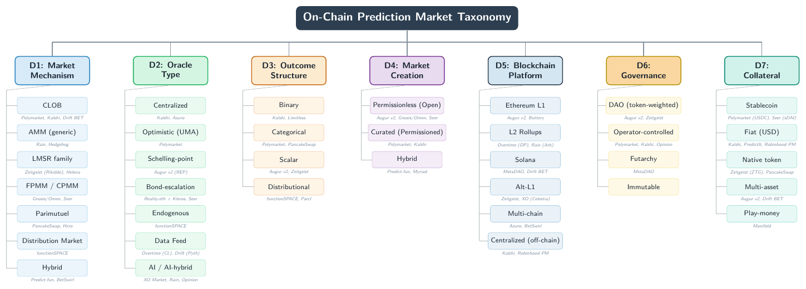

This site holds the supplementary data for the survey. Some of it also appears in the paper as typeset tables, given here in machine-readable form, alongside the full protocol catalogue and per-cell security detail.
| Artifact | In the paper | What this adds |
|---|---|---|
| Protocol classification | Yes, Table 4 (35) | Sortable table and CSV |
| Security matrix | Scores only, Table 5 | Per-cell justification and evidence (click any cell) |
| Full protocol catalogue | Partly, 35 of 76 shown | All 76, including the 41 omitted |
| Taxonomy hierarchy figure | Supplementary | The figure itself |
14 protocols by 14 attack vectors. Scores are transcribed from Table 5. Click any cell for its rationale and evidence.
| Protocol | A1 | A2 | A3 | A4 | A5 | A6 | A7 | A8 | A9 | A10 | A11 | A12 | A13 | A14 | Σ |
|---|---|---|---|---|---|---|---|---|---|---|---|---|---|---|---|
| Polymarket | 2 | 2 | 1 | 2 | 2 | 2 | 2 | 2 | 2 | 2 | 1 | 1 | 2 | 3 | 1.86 |
| Kalshi | 3 | 3 | – | – | 3 | 3 | 3 | – | – | – | 3 | 1 | – | 2 | 2.63 |
| Augur v2 | 3 | 2 | 2 | 2 | 1 | 1 | 1 | 1 | 2 | 2 | 1 | 3 | 1 | 3 | 1.79 |
| Gnosis/Omen | 2 | 2 | 2 | 2 | 2 | 1 | 2 | 1 | 2 | 2 | 1 | 3 | 2 | 3 | 1.93 |
| Azuro | 2 | 2 | 1 | 2 | 2 | 2 | 2 | 2 | 2 | 2 | 1 | 2 | 2 | 2 | 1.86 |
| Zeitgeist | 2 | 2 | 2 | 2 | 2 | 1 | 2 | 2 | 2 | 2 | 1 | 3 | 2 | 2 | 1.93 |
| Overtime | 3 | 2 | 1 | 2 | 2 | 2 | 2 | 2 | 2 | 3 | 1 | 2 | 2 | 2 | 2.00 |
| MetaDAO | 2 | 2 | 2 | 2 | 2 | 2 | 2 | 2 | 2 | 1 | 1 | 3 | 2 | 2 | 1.93 |
| Drift BET | 2 | 2 | 1 | 2 | 2 | 2 | 2 | 2 | 2 | 2 | 1 | 2 | 2 | 2 | 1.86 |
| Seer | 2 | 2 | 2 | 2 | 2 | 1 | 2 | 1 | 2 | 2 | 1 | 3 | 2 | 3 | 1.93 |
| XO Market | 2 | 2 | 2 | 2 | 2 | 1 | 2 | 1 | 1 | 2 | 1 | 3 | 2 | 2 | 1.79 |
| Rain | 2 | 2 | 2 | 2 | 2 | 1 | 2 | 2 | 1 | 2 | 1 | 2 | 2 | 2 | 1.79 |
| Opinion | 2 | 2 | 1 | 1 | 2 | 2 | 2 | 2 | 1 | 2 | 1 | 1 | 2 | 2 | 1.64 |
| Limitless | 2 | 2 | 1 | 2 | 2 | 2 | 2 | 2 | 2 | 2 | 1 | 2 | 2 | 2 | 1.86 |
Kalshi's Σ is a mean over its 8 applicable vectors (6 are N/A for an off-chain venue). The scale is ordinal, so Σ is a clustering summary rather than a fine-grained ranking.
All 76 implementations the survey catalogues. 35 are classified in Table 4 and 41 are omitted (defunct, redundant, casino or lottery hybrids, or insufficient public information). Click a column header to sort, or use the filters below.
| Name | Mechanism | Oracle | Outcomes | Creation | Chain | Governance | Collateral | Status | Table 4 | Omission reason |
|---|
The 35 classified protocols across the seven taxonomy dimensions. Full data in the catalogue above (rows with Table 4 set to Yes) and in protocol_classification.csv.
Seven-dimensional taxonomy with representative protocols per category.
